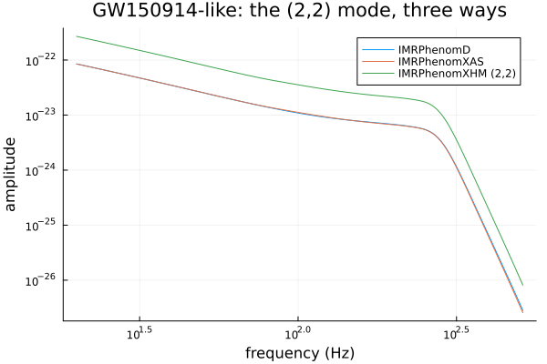
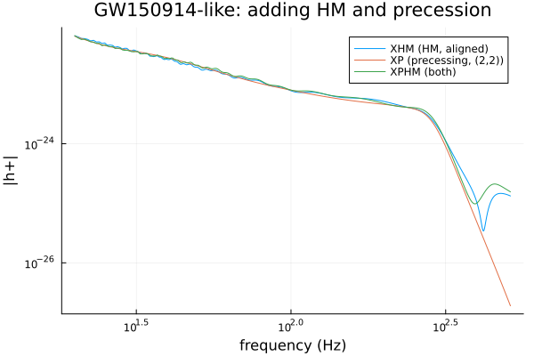
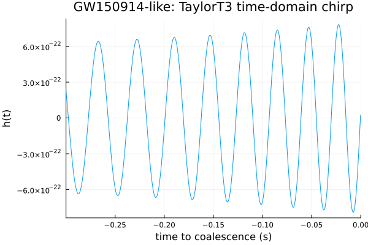

Capstone: Waveform Gallery
This last tutorial puts every model from the series side by side on one system — parameters close to GW150914, the first-ever gravitational-wave detection (m1 ≈ 36 Msun, m2 ≈ 29 Msun, dL ≈ 0.41 Gpc — the same reference system this package's LALSuite comparisons use throughout) — and closes with practical guidance on which model to reach for.
using GravitationalWaveforms, Plots
gr()
m1, m2 = 36.0, 29.0
mc = (m1 * m2)^(3 / 5) / (m1 + m2)^(1 / 5)
eta = (m1 * m2) / (m1 + m2)^2
chi1, chi2 = 0.0, 0.0
dL = 0.41
f_ref = 20.0
inclination, phiRef = pi / 4, 0.0
f = collect(20.0:0.5:512.0)The aligned-spin frequency-domain family
IMRPhenomD, IMRPhenomXAS (its (2,2)-only successor), and IMRPhenomXHM's own (2,2) mode (via h_lm) all model the same dominant harmonic — close, but not identical, fits:
ampD = Ampl(IMRPhenomD(), f, mc, eta, chi1, chi2, dL)
ampX = Ampl(IMRPhenomXAS(), f, mc, eta, chi1, chi2, dL)
h22 = h_lm(IMRPhenomXHM(), 2, 2, f, m1, m2, chi1, chi2, dL; f_ref=f_ref)
plot(f, [ampD ampX abs.(h22)]; xscale=:log10, yscale=:log10,
label=["IMRPhenomD" "IMRPhenomXAS" "IMRPhenomXHM (2,2)"],
xlabel="frequency (Hz)", ylabel="amplitude", title="GW150914-like: the (2,2) mode, three ways")
Adding higher modes and precession
IMRPhenomXHM's full hphc (all 5 modes), IMRPhenomXP's precessing (2,2) twist-up, and IMRPhenomXPHM's combination of both, each add one more physical effect on top:
hp_xhm, hc_xhm = hphc(IMRPhenomXHM(), f, m1, m2, chi1, chi2, dL, inclination, phiRef; f_ref=f_ref)
chi1x, chi1y, chi1z = 0.3, 0.0, 0.1
chi2x, chi2y, chi2z = 0.0, 0.0, -0.05
hp_xp, hc_xp = twist_up22(IMRPhenomXP(), f, m1, m2, chi1x, chi1y, chi1z, chi2x, chi2y, chi2z,
f_ref, inclination, phiRef, dL)
hp_xphm, hc_xphm = hphc(IMRPhenomXPHM(), f, m1, m2, chi1x, chi1y, chi1z, chi2x, chi2y, chi2z,
f_ref, inclination, phiRef, dL)
plot(f, [abs.(hp_xhm) abs.(hp_xp) abs.(hp_xphm)]; xscale=:log10, yscale=:log10,
label=["XHM (HM, aligned)" "XP (precessing, (2,2))" "XPHM (both)"],
xlabel="frequency (Hz)", ylabel="|h+|", title="GW150914-like: adding HM and precession")
The time-domain alternative
TaylorT3 generates the same physical inspiral in the time domain instead — useful whenever h(t) directly, not a frequency-domain phase/amplitude pair, is what you need:
deltaT = 1.0 / 4096.0
t = collect(-4.0:deltaT:-deltaT)
phi_t = Phi(TaylorT3(), t, mc, eta)
amp_t = Ampl(TaylorT3(), t, mc, eta, dL)
h_t = @. -amp_t * cos(phi_t)
plot(t, h_t; xlims=(-0.3, 0), legend=false,
xlabel="time to coalescence (s)", ylabel="h(t)", title="GW150914-like: TaylorT3 time-domain chirp")
Which model do I want?
| Need | Model |
|---|---|
| Fastest aligned-spin frequency-domain waveform | IMRPhenomXAS (newer calibration than IMRPhenomD; prefer it unless matching a specific IMRPhenomD-based analysis) |
| Asymmetric mass ratio or far from face-on, aligned spin | IMRPhenomXHM |
Misaligned (precessing) spins, (2,2) mode sufficient | IMRPhenomXP |
| Misaligned spins and higher modes — the general case | IMRPhenomXPHM |
Non-spinning, need h(t) directly (time domain) | TaylorT3 |
| Prototyping a new ODE-integrated/differentiable/GPU-kernel model | ODEToy's architecture pattern (not a physical model itself — see the previous tutorial) |
Every model above is a direct port of, and was numerically cross-validated against, the corresponding lalsimulation generator during development; the test suite holds reference values for each model.
That's the full model set this package currently implements. See Conventions for a compact reference to the units/sign conventions used throughout, and the API Reference for the complete function list.
This page was generated using Literate.jl.